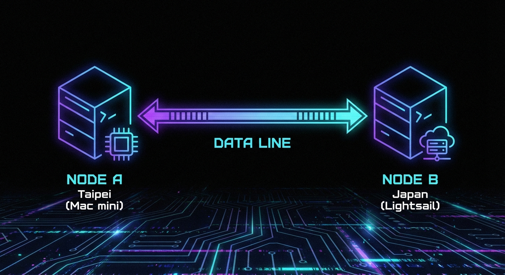

待審核 (Day 1)
主題：別再手動批准 AI 了！我的 Agent 剛剛「斷奶」成功

很多人裝完 OpenClaw 或類似的 AI Agent 框架後，最痛苦的就是：
「AI 每次要上網讀網頁，我的電腦都會跳出一個彈窗問我是否批准。」
這哪叫自動化？這叫「AI 領養了一個需要隨時餵奶的巨嬰」。
### 💡 核心痛點：
預設的瀏覽器 Profile (user) 雖然能用你登入好的 Chrome，但安全機制要求每次 Attach 都要人工確認。當你不在電腦前，你的 Agent 就變成了瞎子。
### 🛠️ 我的暴力解決方案：
1. **捨棄個人 Profile**：建立一個獨立託管的 `openclaw` 專屬瀏覽器環境。
2. **硬編碼預設值**：`openclaw config set browser.defaultProfile openclaw`。
3. **結果**：Agent 現在 24 小時隨時開瀏覽器、讀微信文章、掃 Polymarket，完全不需要我點擊任何按鈕。
### 🧠 AI 管理學啟示：
**「感官自治」是 AI 團隊規模化的前提。**
如果你的 Agent 在獲取資訊的邊界上還需要人工授權，你的管理成本就會隨著 Agent 數量的增加而線性增長。
**真正的高級自動化，是讓 AI 具備「免授權訪問」的能力，而你只需要在 HEARTBEAT.md 裡審計它的行為。**
---
#OpenClaw #AI自動化 #AI管理學 #一人公司 #生產力工具